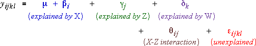
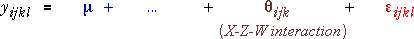

One two-factor interaction
The main effects model assumes that the effect of changing any factor is the same whatever the values of the other factors. In many practical experiment, the effects of the factors are not additive — there is interaction between their effects.
The simplest types of interaction are two-factor interactions. A two-factor interaction between X and Z means that the effect of changing X can depend on the value of Z but not on W.

In this model, there is no interaction between W and the other factors so the effect of changing W is still the same whatever the values of X and Z.
Several two-factor interactions
This model can be extended by adding two-factor interactions between other explanatory variables.
Three-factor interaction
The most complex model for three factors contains all three 2-factor interactions and also a 3-factor interaction term between all three factors,

In this model, the effect of any factor depends on the combination of levels of the other two factors. Each combination of levels for the three factors has an independently adjustable mean.
Hierarchical models
If two factors X and Z have an interaction, the effect of X depends on the value of Z. This implies that we are allowing X to have an effect on the mean response so a main effect for X should also be included in the model.
If a model has an interaction term, all lower-level interaction terms between these factors should also be included in the model.
Models of this form are called hierarchical models.
Degrees of freedom
As in 1- and 2-factor models, 3-factor models have degrees of freedom that describe the level of flexibility of the model. A model's degrees of freedom equals the number of independently adjustable parameters in the model. The table below shows the degrees of freedom corresponding to the main effects and interactions in a hierarchical model for factors X (a levels), Z (b levels) and W (c levels).
| Model term | Degrees of freedom |
|---|---|
| (mean) | 1 |
| X | a - 1 |
| Z | b - 1 |
| W | c - 1 |
| X*Z | (a - 1)(b - 1) |
| X*W | (a - 1)(c - 1) |
| Z*W | (b - 1)(c - 1) |
| X*Z*W | (a - 1)(b - 1)(c - 1) |
The full hierarchical model with a 3-factor interaction has all the above terms and therefore has the sum of these degrees of freedom, abc. (This model allows all abc combinations of factor levels to have separately adjustable mean responses.)
Soft drink bottling
The diagram below shows the flexibility of hierarchical models for the soft drink bottling experiment.
The diagram initially shows a model with all main effects but no interactions. Two of the draggable handles (red arrows) are initially superimposed, so drag one arrow for low carbonisation and pressure to separate them. This model has 5 degrees of freedom and hence 5 draggable arrows. Drag the arrows to investigate the flexibility of the model.
Click the checkbox to add an interaction between Carbonation and Pressure. This model has 2 extra degrees of freedom. Again drag the arrows to investigate the flexibility of the model.
Click the y-x rotation button. Since there is no interaction between Line speed and the other variables, the pattern of interaction between Carbonation and Pressure is the same for low line speed (purple lines) and high line speed (green lines).
Add other 2-factor interaction terms to the model and observe the increasing flexibility.
Note that the diagram only allows you to specify hierarchical models.
Finally add all 2-factor interactions and the 3-factor interaction. This model has 12 degrees of freedom and the mean Fill height deviation for all 12 factor level combinations can be independently adjusted.